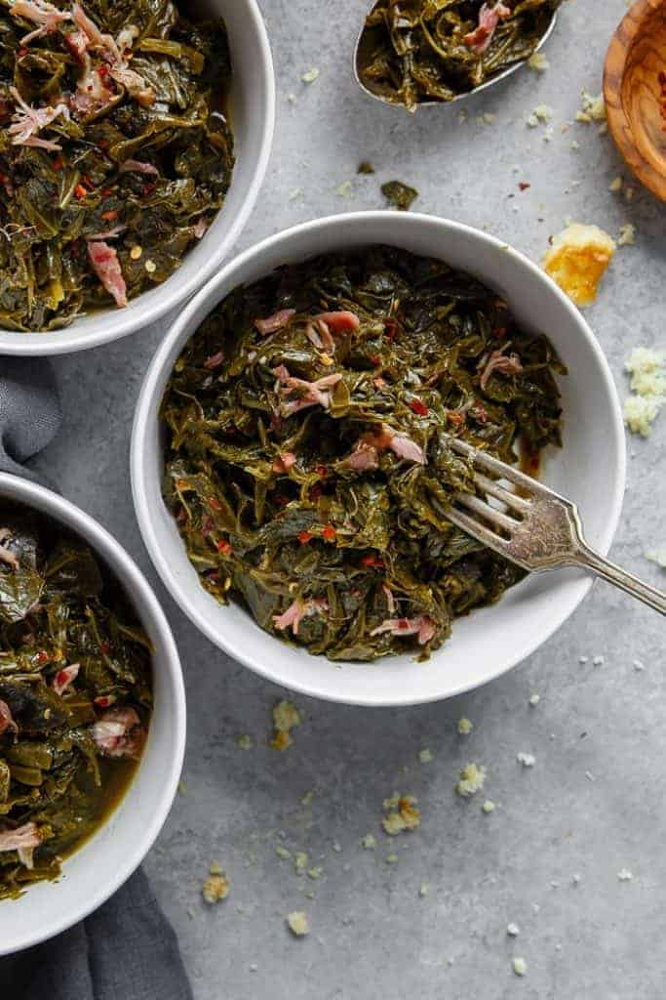

Collard Greens

Ingredients
- 4 bags or bunches of collard greens
- 2 pounds of smoked turkey wings or necks
- 10 cloves whole cloves of garlic
- 3 tablespoons of minced garlic
- 1 bag of frozen onion and pepper mix
- 1 tablespoon of hot sauce
- 1/2 tablespoon sugar
- Splash of white distilled vinegar or apple cider vinegar
- Season Mix: Cajun choice blackened seasonings, Knorr chicken
boullion cube powder, crushed red pepper, garlic powder,
onion powder, thyme leaves, salt, peppercorn medley grinder
Instructions
- Place smoked turkey meat with a little sprinkle of knorrs seasoning in a
pot with water
- Allow to boil on medium heat for atleast 45 minutes or enough for meat
to soften
- While smoke turkey is cooking throughly wash collard greens in a bowl
then dump in a pot
- Add season mix, minced garlic, garlic cloves, onion, hot sauce, sugar, and
your choice of vinegar in a pot
- Allow to cook for 30 minutes to allow greens to steam and become
smaller
- Mix smoked turkey into greens and add more water
- Now allow for greens and smoked turkey to simmer together on medium
heat for another 30 minutes.
- Let sit for 10 minutes before serving
Enjoy!